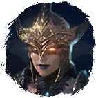
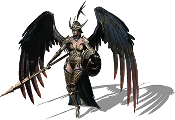
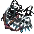

Открыть в интерактивной вики →

| Уровень | 200 |
|---|---|
| Зоны атаки | ближняя, дальняя, ментальная |
| Шанс дропа 100% — уровни | 1-140 |
| Шанс дропа 90% — уровни | -- |
| Шанс дропа 70% — уровни | -- |
| Группа боссов | Ужас |
| Сила (PvE) | 30 007 |
| Аспект | Velhar |
| Здоровье | 87 000 |
| Мана | 15 000 |
| Выносливость | 15 000 |
Локация
- Логово Сидраги
- Древний Зал
Навыки


Дроп


Требования для входа
все сложности:

Усиленные кошки ×1Как добраться
- Древний Зал — путь: Беирн → Склон → Древний Зал
Умения
- Пыль в глаза Пыль в глаза — обычная атака, таран
- Групповая дальняя атака — бросок, шаровая молния, молния, буря
- Сила Единства Сила Единства — групповая аура зимы, ярость, паника
Иммунитеты / особые умения
| Устойчивость к обездвиживанию Устойчивость перед лицом смерти Устойчивость к рубящему урону Прорыв Защиты Призыв: Возвращённый Ишер Призыв: Возвращённый Бренадир Призыв: Возвращённый Эльдингур Призыв: Возвращённый Хеллар |